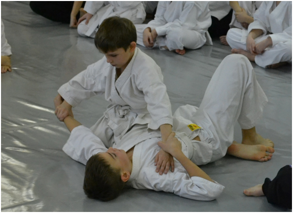
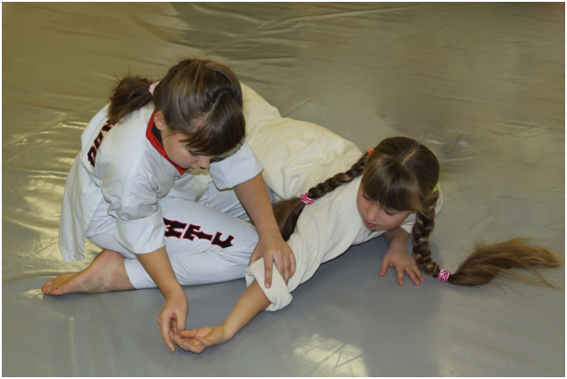

|
О детских тренировках по айкидо в нашем клубе. Информация для родителей Клуб работает с 94 года. И сразу же возник спрос на занятия по айкидо с детьми. С течением времени менялось отношение к детским тренировкам. Сначала это были совместные занятия. Дети взрослые занимались вместе. Сразу же стало ясно, что методика тренировки детей и взрослых отличаются довольно серьезно. По факту детям было сложно, а взрослым не интересно. Был сделан сознательный акцент на удаление детей из групп. Исключение делалось лишь для родителей, которые посещали занятия вместе с ребенком. Так продолжалось до 2002 года. Примерно с этого времени сложилась методика занятий, и были определены акценты в тренировочном процессе. После этого времени мы с детьми не работали вообще. Неоднократно предпринимались попытки открыть именно детские группы айкидо. К сожалению, в Саратове практически не было специализированных залов, с мягким покрытием. А в тех, которые были - топовое время для детских групп отсутствовало. И даже с 2006, когда заработали первые коммерческие залы, запустить детские группы не вышло.
И только в 2011, с открытием специализированного зала в с\к «Эверест» , проект заработал. Концепция детских групп включает в себя следующие пункты:
О чем нужно знать, когда вы отдаете ребенка в клуб. Прежде чем отдать ребенка в секцию, обязательно получите разрешение врача. Доведите до сведения тренера информацию о любых проблемах со здоровьем. Прежде всего, за ребенка ответственен родитель. Придите в клуб и побеседуйте с тренером, расскажите о своем ребенке максимально полно, о характере, о том, что нравиться ребенку, и что нет. Наша задача принести ребенку лишь пользу, дать возможность ему развиваться и создать максимально благоприятные для этого условия. Попасть в новую для себя среду для большинства детей — это стресс. Поскольку совершенно необходимо, чтобы малышу понравились занятия, и он стремился на тренировки, нам нужно свести этот стресс к минимуму. Если вы посчитаете, что при вашем присутствии на тренировке ребенок будет чувствовать себя спокойнее, вы, безусловно, поначалу ( первые несколько занятий ) можете остаться в качестве зрителя. Главное, чтобы ребенок только чувствовал ваше присутствие, не более того . Нельзя одергивать его, подсказывать, ругать или делать замечания. Этим вы только будете отвлекать ребенка, и мешать тренеру и другим детям. Требования к ребенку . Совершенно очевидно, что ребенок должен быть в данный момент здоровым и отдохнувшим. Если вы чувствуете, что он заболевает или устал, но все же хочет заниматься, предупредите об этом инструктора, поскольку перегружать ребенка в этих случаях вредно для его здоровья. Одежда для тренировок . К одежде тоже есть определенные требования. Совсем не обязательно сразу покупать ребенку кимоно. Это лишь на ваше усмотрение. Ребенок должен быть одет в трикотажные штаны и футболку. Одежда не должна иметь застежек или молний, чтобы не поранить ребенка. Занимаются дети босиком. Если это девочка и у нее длинные волосы, используйте только мягкие завязки для волос. Избегайте использования любых заколок или жестких резинок. Волосы не должны мешать ребенку, лезть в глаза. Категорически запрещается приходить на тренировки с любыми украшениями (цепочки, кольца, серьги). Это тоже может быть опасно. ОБЯЗЯТЕЛЬНА сменная обувь ( и для ребенка и для родителей ). Проход из холла во внутренние помещения клуба без сменной обуви - запрещен . Еда и вода. Давайте с собой воду, чтобы ребенок мог попить после тренировки. Нельзя кушать менее чем за 2 часа перед тренировкой. Не давайте сразу после тренировки тяжело усваиваемую пищу. Поведение ребенка. На тренировках огромное внимание уделяется дисциплине. Дисциплина - это залог безопасности. Самое главное требование на занятиях — беспрекословное послушание. Прежде чем привести ребенка в секцию, объясните ему, что слушаться тренера очень важно, что бы это не стало для него не приятной неожиданностью. Также запрещено баловаться, драться, даже в шутку, так как дети не соизмеряют свои силы и могут травмировать друг друга. Нельзя без разрешения брать спортивный инвентарь.  Что дадут вашему ребенку тренировки. Прежде всего, ребенок физически окрепнет. На тренировках мы играем в подвижные игры, бегаем и прыгаем, учимся делать кувырки. На разминке мы делаем растяжку и разогреваемся. Разминка — это неотъемлемая часть тренировочного процесса, и чем качественней она проведена, тем ниже вероятность травмы. Кроме того, разминка учит ребенка лучше чувствовать свое тело . На наших тренировках мы следим, чтобы дети терпимо относились друг к другу. Научить их уважать себя и других — очень важная задача. Этому уделяется огромное внимание. Благодаря тому, что мы все учимся поддерживать и помогать друг другу, в группе очень доброжелательная обстановка. Ребенок не способен слишком долго удерживать внимание на чем-то одном, поэтому мы чередуем упражнения и игры. Технические элементы айкидо, используемые на наших занятиях, учат совершенным и точным движениям, новой координации, необычным сочетаниям действий, которые откроют новые нейронные связи в мозге ребенка и благоприятно скажутся на его сознании и самоощущении . Когда ребенок подрастет, мы переведем его в старшую детскую группу, там тренировки будут сложнее, но не менее интересны. Если ребенок захочет заниматься чем-то другим, у него будут уже какие-то навыки, и он сможет лучше усваивать новые для себя предметы, и не только спортивные. Ведь на тренировках мы не только бегаем и прыгаем, но и общаемся, разбираем конфликтные ситуации, разговариваем на темы, которые интересуют или тревожат ребенка. Все дети разные, все по-разному развиты, могут быть разного возраста, характера, иметь разные способности и по-разному воспринимать мир. Поэтому подход к каждому ребенку индивидуальный, нет общих жестких критериев и требований. Мы с вами будем стараться лучше изучить характер ребенка, и это поможет развить его индивидуальность и привить хорошие черты характера и исправить дурные. Для того, что бы он жил сильной, полной радостной и успешной жизнью. Чтобы смог преодолевать трудности и учиться, приобретая ценный опыт . Чтоб он был счастлив! Ведь важно не то, каким бойцом станет ваш ребенок, а то, каким он вырастет человеком!  Залы, где проходят тренировки детских групп айкидо с сентября 2019: 1 - спорт клуб «Эверест», район автовокзала 2 - спорт клуб «Эдельвейс», Ленинский район, Молодежка 3 - спорт клуб «Никитинский», Юбилейный Тренировки проходят утром и вечером. А тем, кому сложно добираться на буднях, могут посещать детские тренировки «выходного дня». Подробнее о расписании и условиях тренировок на специализированной страничке сайта "Залы и расписание" . |